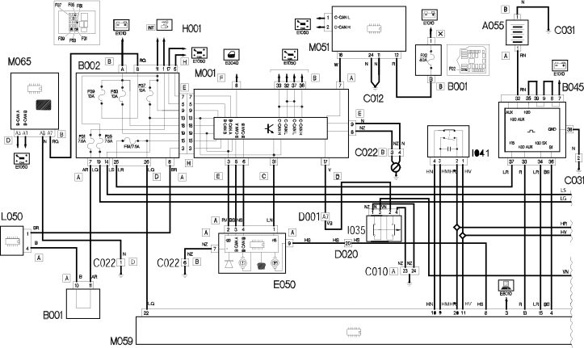
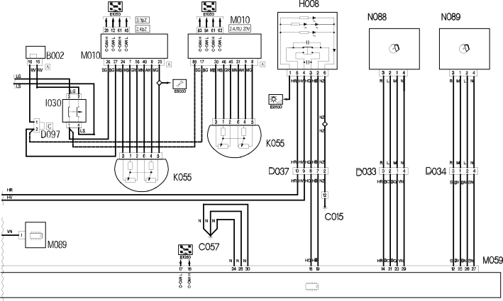

E7025 ELECTRIC HANDBRAKE WIRING DIAGRAM
- Path
- Electrical equipment > ELECTRICAL FUNCTIONS > E70 VEHICLE ELECTRONIC SYSTEMS > E7025 ELECTRIC HANDBRAKE > E7025 ELECTRIC HANDBRAKE WIRING DIAGRAM
- Kind
- topic
- Applies to
- engines: 2.4 20V, 3.0 V6, 3.2 V6, 2.4 JTD 20V; all production periods; only with equipment: Automatic Transmission
- Interactive page
- https://sloeber94.github.io/elrnDB-lThss/en/#/841005886
Applies to: engines: 2.4 20V, 3.0 V6, 3.2 V6, 2.4 JTD 20V; all production periods; only with equipment: Automatic Transmission
Wiring Diagram


Components
Component code | Name | Assembly reference |
|---|---|---|
Additional battery for parking control unit (NPB) | - | |
Engine compartment junction unit | 5505A | |
Junction unit under dashboard | - | |
Luggage compartment junction unit (CVB) | 5505A | |
Left front earth | - | |
- | ||
Driver's dashboard earth | - | |
Centre dashboard earth | - | |
Right rear earth | - | |
- | ||
- | ||
- | ||
Left rear/brake caliper coupling | - | |
- | ||
D037 | Giunzione posteriore / mobiletto centrale | - |
Instrument panel | - | |
Ignition switch | - | |
- | ||
I030 | Interruttore pedale freno | 5520G |
Safety switch on brake pedal for cruise control | - | |
Electric brake emergency release switch | - | |
1068A | ||
Automatic transmission solenoid valves | 2130B | |
Body computer | - | |
Engine management control unit | 1056B | |
Electric brake control unit | - | |
Info-telematic control unit (NIT) | 5580P | |
Left rear brake caliper motor | - | |
Right rear brake caliper motor | - |
Topics linked from this page (27)
- A055 Additional battery for parking control unit (NPB)
- B001 Engine compartment junction unit
- B002 Junction unit under dashboard
- B045 Luggage compartment junction unit (CVB)
- C010 Left front earth
- C012 ABS front earth
- C015 Driver's dashboard earth
- C022 Centre dashboard earth
- C031 Right rear earth
- C057 Electric brake earth
- D001 Front/dashboard coupling
- D020 Dashboard/rear coupling
- D033 Left rear/brake caliper coupling
- D034 Right rear/brake caliper coupling
- E050 Instrument panel
- H001 Ignition switch
- H008 Electric brake control
- I035 Safety switch on brake pedal for cruise control
- I041 Electric brake emergency release switch
- K055 Accelerator pedal potentiometer
- L050 Automatic transmission solenoid valves
- M001 Body computer
- M010 Engine management control unit
- M059 Electric brake control unit
- M065 Info-telematic control unit (NIT)
- N088 Left rear brake caliper motor
- N089 Right rear brake caliper motor